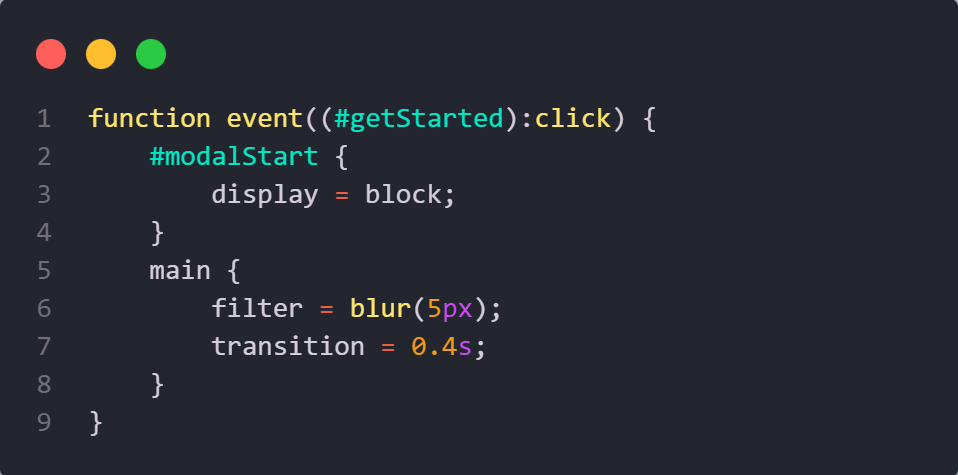
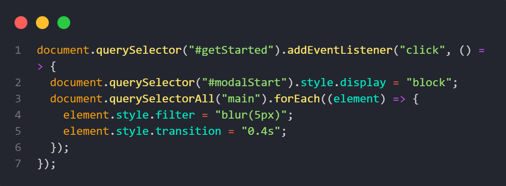

JSS
Introducing JSS, an innovative preprocessor that bridges the gap between JavaScript and CSS, offering a unique and powerful syntax to enhance your web development experience. JSS combines the flexibility and dynamic capabilities of JavaScript with the simplicity and elegance of CSS, empowering developers to create more responsive and interactive web applications effortlessly.


How does it work ?
Our JavaScript-based preprocessor, JSS, enables writing enhanced JavaScript and CSS with a unique syntax. Using PEGJS, we developed a custom grammar and parser that reads your JSS code via the file system (fs) and converts it into a JSON-like abstract syntax tree (AST).
The parser validates your code with conditional checks and assigns features to handling functions. Simple CSS properties are converted to standard CSS, while complex features are transpiled into JavaScript.
JSS supports advanced features like variable management, event handling, and conditional logic within styles, allowing for dynamic and responsive designs.
Finally, the preprocessor generates jss.css for CSS styles and jss.js for JavaScript functionalities, ready to be linked to your web page. Integrating JSS enhances your ability to create dynamic, interactive web applications.

Example
From
JSS syntax
This is a simple event function that listen to the element with the ID #getStarted and apply the styles inside if it was clicked.
To
JavaScript Code
This is the code that our framework JSS generates from the previous JSS syntax.
Key Differences
JSS
JavaScript Style Sheets
Assign styles using ' = '
Use JavaScript-style properties (e.g., zIndex, fontSize)
Utilize JavaScript events as pseudo-classes.
Introduce new style properties such as innerHTML, textContent, and more.
Support for functions in events and auto-called delay functions.
Real-time relative style properties provided by JSS Tunnels.
Style blocks as variables.
Clone styles of other elements using arrow-style functions.
And Much More...
This is a simple event function that listens to the element with the ID #getStarted and applies the styles inside when it is clicked.
CSS
Cascading Style Sheets
Assign styles using ' : '
CSS properties with dashes ('-')
Supports only static pseudo-classes like :hover, :active...
No support for inner content of text or elements.
Not found
Not found
Not found
Not found
Not found
No fixed update schedule.
Prerequisites
Before installing JSS, you need to have the following prerequisites installed on your machine:
- Node.js
- npm
To check if you have Node.js installed, run the following command in your terminal:
Installation
To install JSS, you need to run the following command in your terminal:
git clone https://github.com/othman4dev/JSSv2.0.git
This will clone the JSS repository to your local machine.
After cloning the repository, navigate to the JSS directory and run the following command:
npm install
This will install all the necessary dependencies for JSS.
To start using JSS, run the following command:
npm run jss